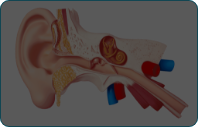
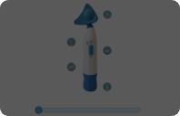
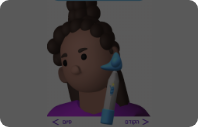

-
אנחנו הורה וילד/ה
הגעת לאתר הדרכה של האירדוק, מכשיר שעוזר להתגבר על כאבים באוזניים. יכול להיות שהכאבים מקשים על ילדך בלימודים או עם חברים, ואנחנו כאן כדי לעזור.
-

-
בעיות אוזניים נפוצות אצל ילדים וילדות
דלקות אוזניים אצל תינוקות ופעוטות הן בעיה נפוצה, שלרוב מטופלת בתרופות או בניתוח כפתורים. האירדוק מציע אלטרנטיבה בטוחה ויעילה, המתאימה לשימוש מגיל שנה, ומסייע בהקלת תסמינים ללא צורך בטיפולים פולשניים.
-
כיצד האירדוק משפיע על האוזן?
לחיצה על כל אייקון תחשוף מידע על החלק באוזן. אבל איך הוא עובד? לחצו על הכפתור כדי לגלות...

למה דווקא אירדוק?

ניתוח כפתורים
ניתוח כפתורים מתבצע בהרדמה מלאה ומיועד לטפל בדלקות אוזניים כרוניות וירידה בשמיעה. האירדוק מציע אלטרנטיבה לא פולשנית, המסייעת להקל על תסמינים אלה ולדחות, או במקרים מסוימים, להימנע מניתוח.
פתרון טבעי
האירדוק מציע פתרון נוח ונטול כאבים להקלת כאבי אוזניים, ללא צורך במרשם רופא. בניגוד לאנטיביוטיקה, הטיפול אינו פולשני ואינו גורם לתופעות לוואי.
יעילות מוכחת
מחקר שנעשה על מכשיר האירדוק מצביע על כך שמכשיר האירדוק מסייע בהקלת תסמיני דלקת אוזן תיכונה והצטברות נוזלים, כגון תחושת מלאות באוזניים. לקריאה נוספת לחצו כאן.
נא להכיר: מכשיר האירדוק
לחיצה על כל אייקון תחשוף הסבר על אותו חלק, ואפשר להזיז את הסליידר כדי לסובב את המכשיר.

-

-
טיפים לפני השימוש
הרבה פעמים ילדים וילדות חוששים מדברים חדשים, לכן הנה כמה טיפים שיכולים לעזור:
אם הרטט מפחיד את הילד/ה
הפעילו את המכשיר ואפשרו לילד/ה לגעת בו על מנת להרגיש את הרטט העדין, הסבירו שהאירדוק אינו מפחיד ולא מזיק.אם הילד/ה חושש/ת מהשימוש במכשיר
תוכל להראות לילדכם/ן סרטונים של ילדים אחרים שהשתמשו במכשיר לחצו כאן לצפייה בהמלצה
איך לתפעל את האירדוק צעד אחר צעד
